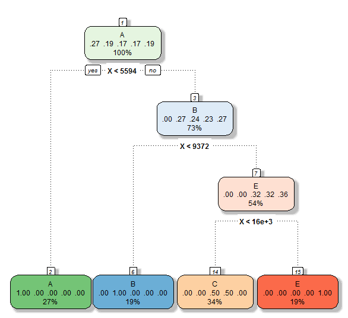

Due to the fact that there are many data points in the training data set we could consider taking only a part of it, to begin with. For example, to work just with the first 1000 data points.
An alternative could be to get just a subset of the training data, for certain parameters or reduce the number of variables using the Principal Components Analysis.
This is a classification problem and therefore we could run the recursive partitioning method.
Here is a screenshot of the the output:
